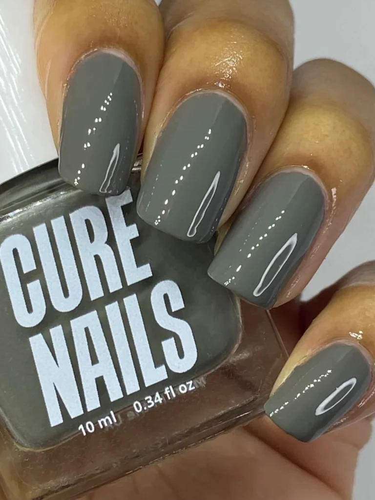

About Cure Nails
Cure Nails is a vegan friendly nail polish made by Matthew Eastwood and Emily Feeney. They are based in Hull.
This is one of the nail polishes modeled by one of our swatchers
Here are the reaons why you should choose Cure Nails:
- Vegan
- Not tested on animals
- Cruelty-Free
- Loads of colors to choose from